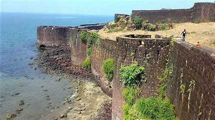

Vijaydurg Fort
Vijaydurg Fort is a historic sea fort located in Sindhudurg district, Maharashtra, India. Built by Chhatrapati Shivaji Maharaj, it is one of the oldest and strongest marine forts in the state. Here are some key details about Vijaydurg Fort:
History
- Built By: Vijaydurg Fort was constructed by Shivaji Maharaj in the late 17th century to strengthen Maratha naval power and protect the Konkan coast.
- Significance: The fort served as a crucial strategic outpost for naval operations and played a key role in defending against Portuguese and British naval forces.
Architecture
- Design: Vijaydurg Fort is built on a rocky island and features massive walls, bastions, and entrance gates designed to withstand sea attacks.
- Notable Structures: Highlights include the Ganesh Temple, Siddhivinayak Temple, and the dargah of Sidi Maula, reflecting the fort's multicultural history.
Location
- Coordinates: 16.4862° N, 73.2893° E
- Elevation: Vijaydurg Fort is situated at sea level, accessible via boats from the coastline.
- Nearby Attractions: Nearby attractions include the scenic beaches of Devgad, temples like Rameshwar Temple, and historical sites such as Devgad Fort.
Visiting Information
- Accessibility: Visitors can reach Vijaydurg Fort by road from Mumbai or Pune, followed by a short boat ride from the coast to the fort.
- Entry Fee: Free of charge.
- Best Time to Visit: The best time to visit Vijaydurg Fort is during the winter months (November to February) when the weather is pleasant.
Points of Interest
- Marine Views: Enjoy breathtaking views of the Arabian Sea and surrounding landscapes from the fort's vantage points.
- Historic Significance: The fort witnessed significant naval battles and events during Shivaji Maharaj's reign, contributing to its historical importance.
Vijaydurg Fort stands as a symbol of Maratha naval prowess and architectural brilliance, attracting history enthusiasts and tourists to explore its rich heritage and picturesque surroundings.